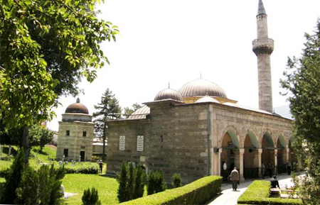
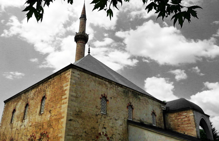
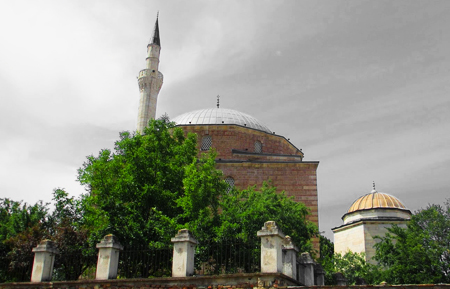

C H U R C H E S
M O S Q U E S
Isaac Bey Mosque  This mosque, built in 1483 by Isaac Bey, was originally called Aladza (colourful), reffering to the encrusted ceramic tiles ornamenting the facade and the drum of the mosque. In the past, it had been an architectural complex comprising a caravanserai, imaret, religious school, and turbe. Jahja Pasha Mosque  Jahja Pasha Mosque was built in 1504 for Jahja Pasha, son-in-law of Sultan Bayazit II. It is notable for its modern four-sided roof. Originally, the prayer area was roofed with one large and five small domes, but they were destroyed in the 1963 earthquake. The minaret top is made of gold half moon and star. Mustafa Pasha Mosque  The mosque was built in 1492 on the orders of Mustafa Pasha whilst he has vizier of Skopje. This is one of the most beautiful buildings dating from the Ottoman Empire. Mustafa Pasha’s mausoleum and the sarcophagus of his daughter Umy are placed in the grounds of the mosque.